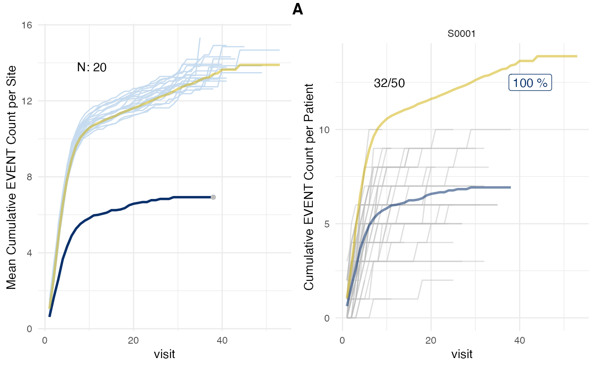

Introduction
The simaerep default algorithm only uses table
operations that can also be replicated in a dbplyr
compatible data base backend via sql. The classic version
of the algorithm used a vector based approach to sample the study
data.
The classic algorithm would also rely on a specific cut-off evaluation point that was determined for each site based on the progression of its patients. This means that only visits up to a certain progression point would be considered. Patients that had not yet reached that visit point would be excluded from the analysis.
The classic algorithm is faster and ensures that the sampling pool for patients would not get smaller than 20%. Further all publications using {simaerep} employed the classic algorithm. The default algorithm uses fixed seeds within the simulations so that the score will always be the same if the data does not change.
Advantages:
- faster
- robust sampling pool of 20% patients
- fixed seeds provide consistent scores
- used in publications
Disadvantages:
- slightly lower statistical performance
- can only calculate probabilities for one event type per run
- not compatible with database backends
Classic Algorithm
We can still employ the classic algorithm by setting the inframe argument to FALSE
# a high sd will result in more patients with fewer visits
df_visit <- sim_test_data_study(
ratio_out = 1/20,
factor_event_rate = -0.5,
max_visit_sd = 10,
event_rates = (dgamma(seq(1, 20, 0.5), shape = 5, rate = 2) * 5) + 0.1
)
# the classic algorithm requires event count saved as "n_ae"
df_visit$n_ae <- df_visit$n_event
evrep_classic <- simaerep(df_visit, inframe = FALSE)
evrep_classic## simaerep object:
## ----------------
## Plot results using plot() generic.
## Full results available in "df_eval".
##
## Summary:
## Number of sites: 20
## Number of studies: 1
##
## Classic algorithm used to calculate probabilities!!
##
## Multiplicity correction applied to prob column.
##
## First 10 rows of df_eval:
## # A tibble: 10 × 10
## study_id site_id n_pat n_pat_with_med75 visit_med75 mean_event_site_med75
## <chr> <chr> <int> <dbl> <dbl> <dbl>
## 1 A S0001 50 32 15 6
## 2 A S0002 50 32 14 11.8
## 3 A S0003 50 29 14 10.7
## 4 A S0004 50 31 15 11.1
## 5 A S0005 50 36 13 12.1
## 6 A S0006 50 34 19 11.6
## 7 A S0007 50 33 16 11.4
## 8 A S0008 50 32 17 11.3
## 9 A S0009 50 32 14 11.9
## 10 A S0010 50 34 18 12
## # ℹ 4 more variables: mean_event_study_med75 <dbl>,
## # n_pat_with_med75_study <int>, prob_no_mult <dbl>, prob <dbl>
plot(evrep_classic, study = "A")## Warning in fortify(data, ...): Arguments in `...` must be used.
## ✖ Problematic argument:
## • na.rm = TRUE
## ℹ Did you misspell an argument name?
## Arguments in `...` must be used.
## ✖ Problematic argument:
## • na.rm = TRUE
## ℹ Did you misspell an argument name?We can also visualize the visit cut-off evaluation point visit_med75
plot(evrep_classic, what = "med75", study = "A", n_sites = 6)## purple line: mean site event of patients with visit_med75
## grey line: patient included
## black dashed line: patient excluded
## dotted vertical line: visit_med75, 0.75 x median of maximum patient visits of site
## solid vertical line: visit_med75 adjusted, increased to minimum maximum patient visit of included patients
## dashed vertical line: maximum value for visit_med75 adjusted, 80% quantile of maximum patient visits of studyOriginally simaerep was built for the detection of
under-reporting of adverse events over-reporting was not in scope. In
case site reporting average was higher than study average. The sampling
of patients was skipped which made the algorithm a little bit faster. We
can still switch off the over-reporting analysis.
evrep_or_off <- simaerep(df_visit, inframe = FALSE, under_only = TRUE)
evrep_or_off## simaerep object:
## ----------------
## Plot results using plot() generic.
## Full results available in "df_eval".
##
## Summary:
## Number of sites: 20
## Number of studies: 1
##
## Classic algorithm used to calculate probabilities!!
##
## Only under-reporting probability calculated !!!
##
## Multiplicity correction applied to prob column.
##
## First 10 rows of df_eval:
## # A tibble: 10 × 9
## study_id site_id n_pat n_pat_with_med75 visit_med75 mean_event_site_med75
## <chr> <chr> <int> <dbl> <dbl> <dbl>
## 1 A S0001 50 32 15 6
## 2 A S0002 50 32 14 11.8
## 3 A S0003 50 29 14 10.7
## 4 A S0004 50 31 15 11.1
## 5 A S0005 50 36 13 12.1
## 6 A S0006 50 34 19 11.6
## 7 A S0007 50 33 16 11.4
## 8 A S0008 50 32 17 11.3
## 9 A S0009 50 32 14 11.9
## 10 A S0010 50 34 18 12
## # ℹ 3 more variables: mean_event_study_med75 <dbl>,
## # n_pat_with_med75_study <int>, prob <dbl>All values in prob are between -1 and 0 instead of -1
and 1.
summary(evrep_or_off$df_eval$prob)## Min. 1st Qu. Median Mean 3rd Qu. Max.
## -1.00 0.00 0.00 -0.05 0.00 0.00The classic version also supports poisson.test results in addition to the boot-strapped results. As the poisson p-values obtained for under-reporting are not inversely related to the over-reporting, poisson test p-values are only available for under-reporting.
evrep_pval <- simaerep(df_visit, poisson_test = TRUE)
evrep_pval## simaerep object:
## ----------------
## Plot results using plot() generic.
## Full results available in "df_eval".
##
## Summary:
## Number of sites: 20
## Number of studies: 1
##
## Classic algorithm used to calculate probabilities!!
##
## Only under-reporting probability calculated !!!
##
## Multiplicity correction applied to prob and pval column.
##
## First 10 rows of df_eval:
## # A tibble: 10 × 10
## study_id site_id n_pat n_pat_with_med75 visit_med75 mean_event_site_med75
## <chr> <chr> <int> <dbl> <dbl> <dbl>
## 1 A S0001 50 32 15 6
## 2 A S0002 50 32 14 11.8
## 3 A S0003 50 29 14 10.7
## 4 A S0004 50 31 15 11.1
## 5 A S0005 50 36 13 12.1
## 6 A S0006 50 34 19 11.6
## 7 A S0007 50 33 16 11.4
## 8 A S0008 50 32 17 11.3
## 9 A S0009 50 32 14 11.9
## 10 A S0010 50 34 18 12
## # ℹ 4 more variables: mean_event_study_med75 <dbl>,
## # n_pat_with_med75_study <int>, pval <dbl>, prob <dbl>
plot(evrep_pval, prob_col = "pval", study = "A")## Warning in fortify(data, ...): Arguments in `...` must be used.
## ✖ Problematic argument:
## • na.rm = TRUE
## ℹ Did you misspell an argument name?
## Arguments in `...` must be used.
## ✖ Problematic argument:
## • na.rm = TRUE
## ℹ Did you misspell an argument name?
Maintaining Reproducibility
We take several measures to ensure consistent results between
simaerep versions using unit tests.
- Sample data stored in
R/sysdata.rdato ensure identical results for classic algorithm. - Visit cut-off point visit_med75 can be used with inframe method to check that the same sites are flagged as with classic method.
- Compare base R multiplicity correction with simaerep inframe multiplicity correction.